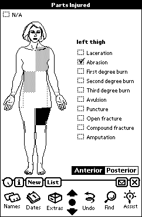

Digital Objectives
There is a female body outline as well. The patient’s sex is recorded earlier in the sequence of data collection screens. Besides determining which body outline the user sees, the patient’s gender also controls whether other screens, such as Obstetrics, will be seen at all.
